nomozip · UI 设计目标图册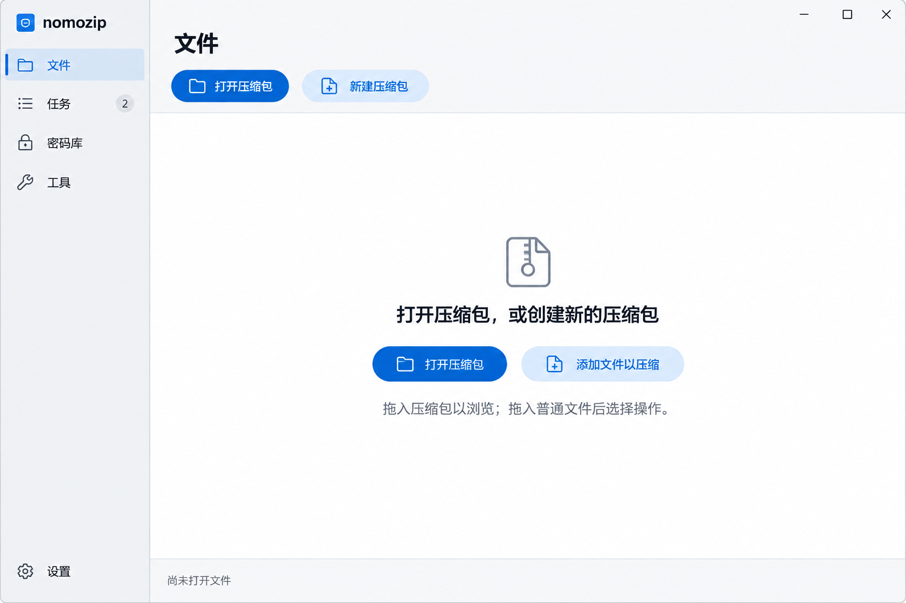
01 · 文件入口与空态
打开原图 ↗
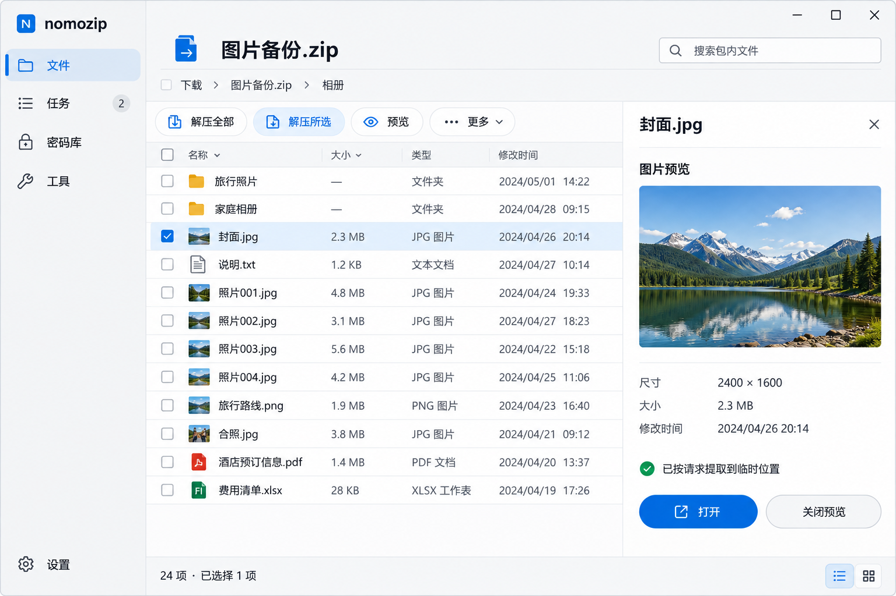
02 · 归档浏览与预览
打开原图 ↗
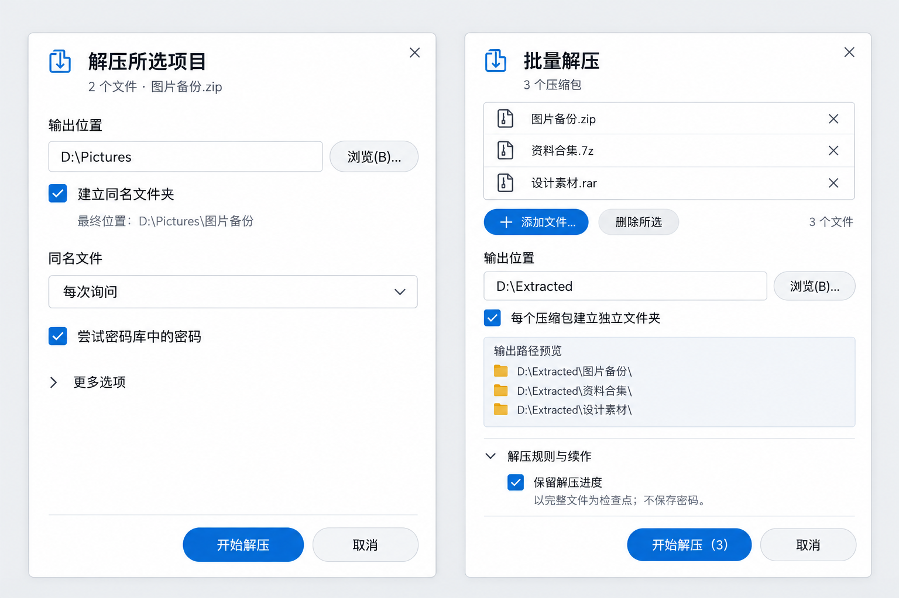
03 · 单包与批量解压
打开原图 ↗
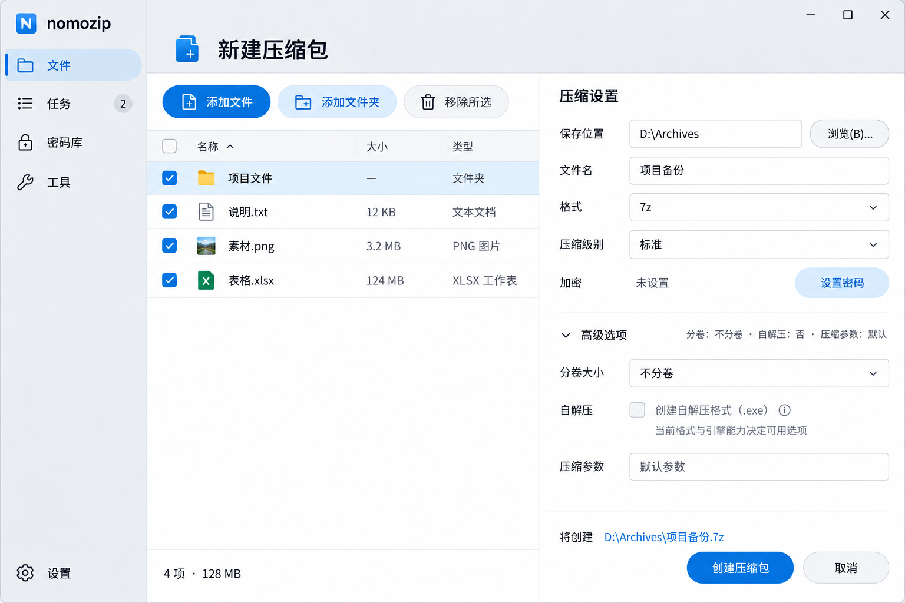
04 · 新建压缩包
打开原图 ↗
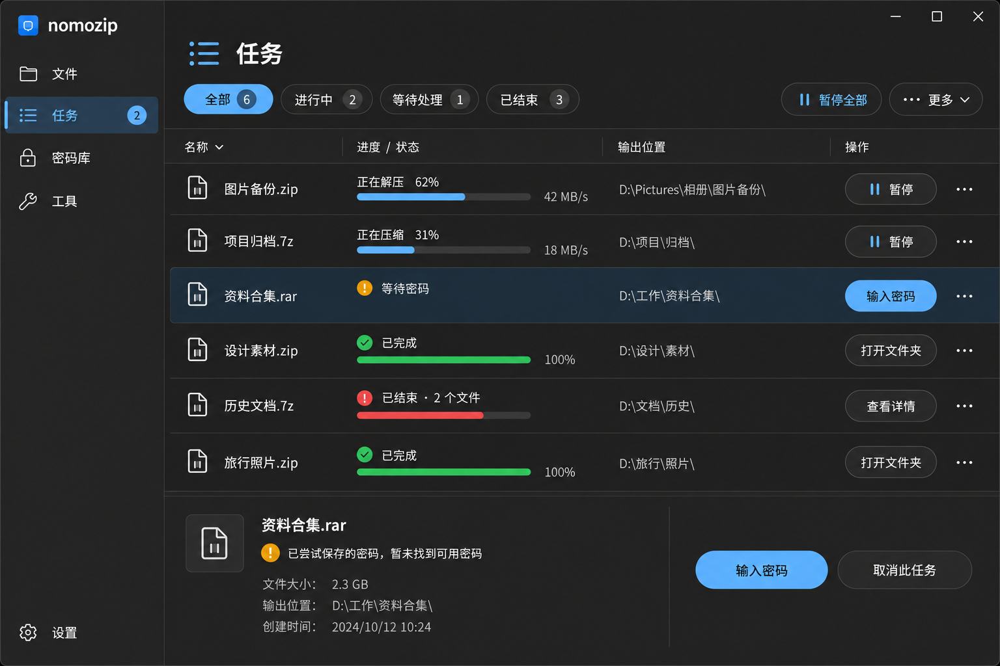
05 · 任务管理（深色）
打开原图 ↗
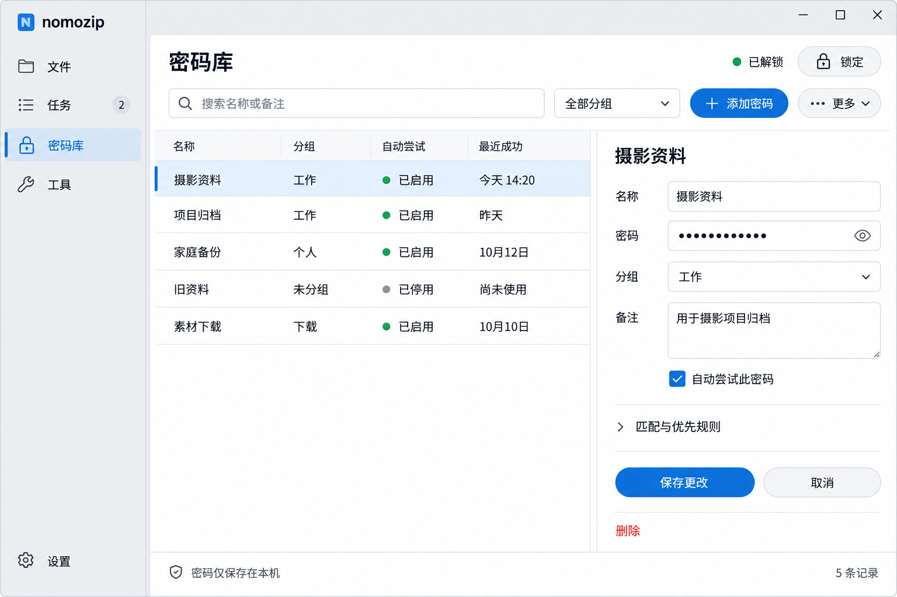
06 · 密码库
打开原图 ↗
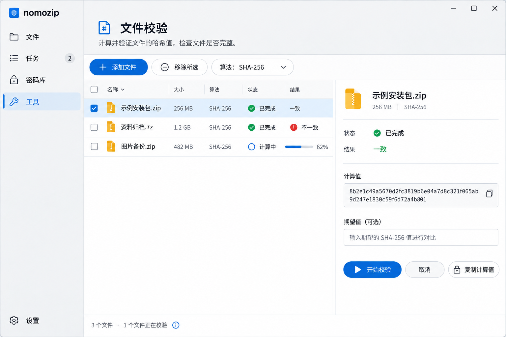
07 · 文件校验
打开原图 ↗
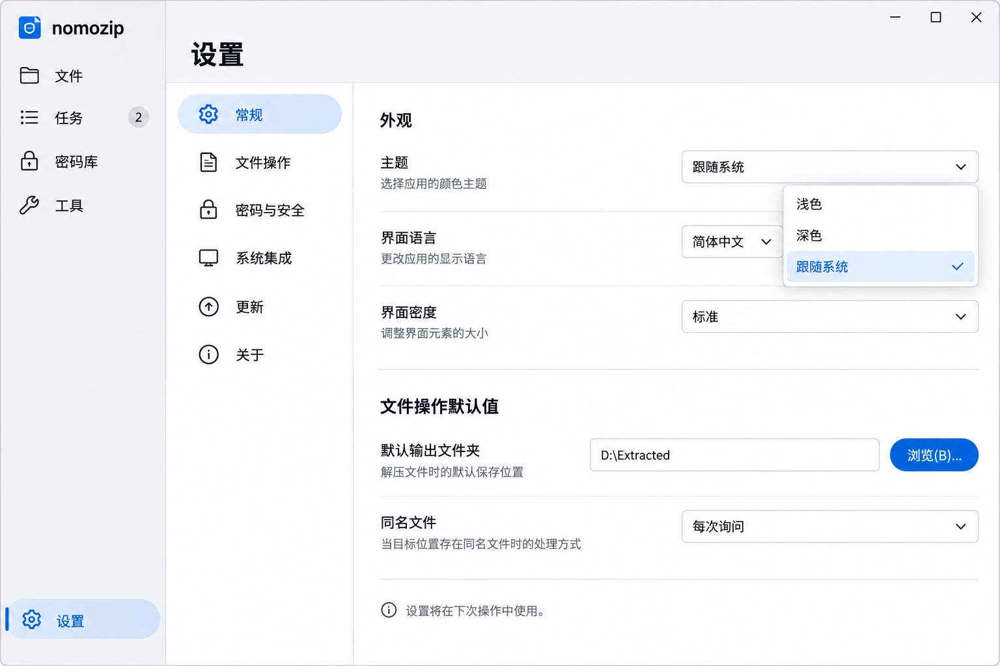
08 · 常规设置
打开原图 ↗
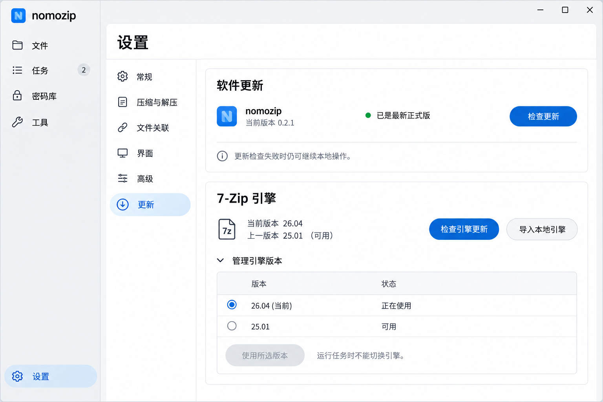
09 · 软件与引擎更新
打开原图 ↗
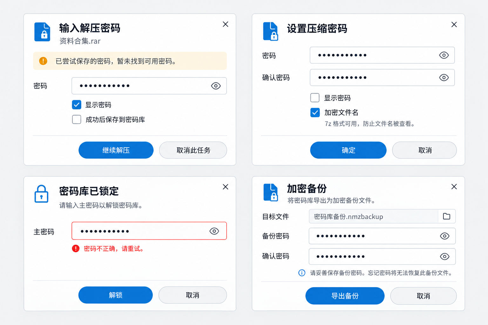
10 · 密码与安全对话框
打开原图 ↗
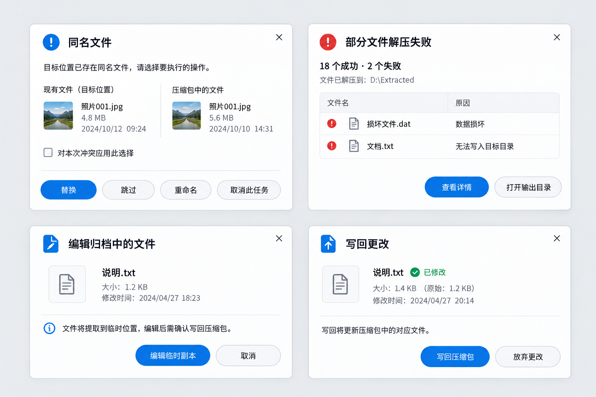
11 · 冲突、失败与编辑写回
打开原图 ↗
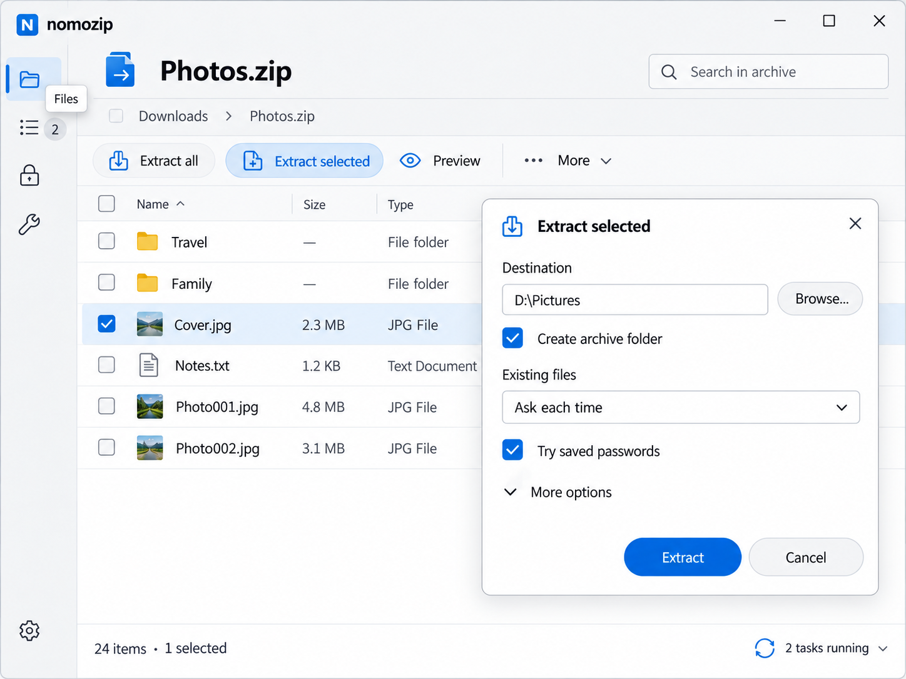
12 · 英文窄窗口
打开原图 ↗
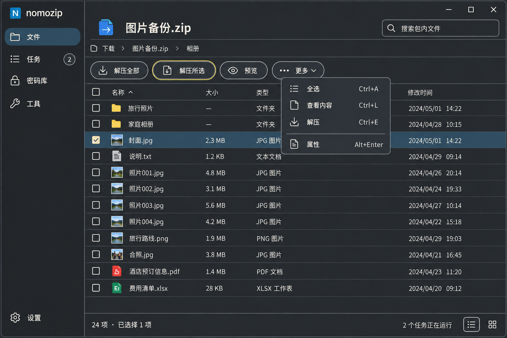
13 · 柔和对比度与键盘焦点
打开原图 ↗
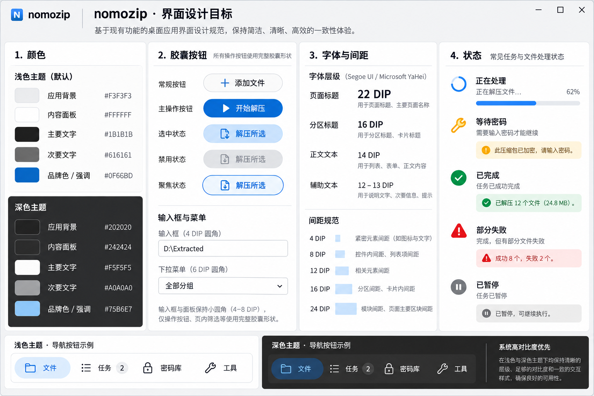
14 · 颜色、圆角与组件规范
打开原图 ↗